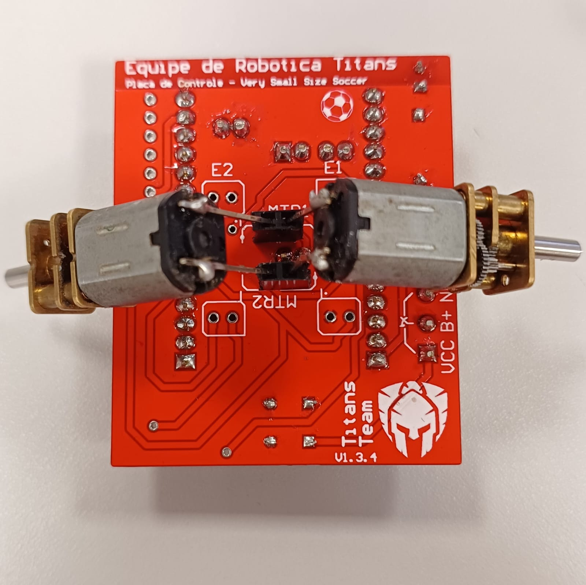

Envio de PWM para os motores via WI-FI
Prefácio
Uma das etapas durante a validação da construção final de uma PCB é o envio de PWM para os motores via Wi-Fi. Isso é necessário para verificar se o PWM enviado está sendo convertido em corrente corretamente.
Passo a passo
Separe a PCB montada, uma ESP-32, uma bateria carregada (com cabo para conectar na PCB), um cabo Micro USB e um computador. O computador do LAB será usado para explicar o processo.
Configurando a ESP-32
A ESP-32 deve estar com o código padrão utilizado no VSSS, para receber os pacotes de dados enviados pelo computador.
O código está guardado no GitHub do VSSS, no endereço: /Firmware/ESP-32/main.
Gravando o código na placa:
A forma padrão para gravar o código na ESP-32 é:
- Clone o repositório. Já clonado no endereço
~/Documentos/VSSS/, no computador do LAB. - Abra o Arduino-IDE.
- Vá em
File -> Open..., navegue até o diretório do repositório, entre em:/Firmaware/ESP-32/maine abra o arquivomain.ino. - Depois de carregar o projeto, selecione a ESP-32 seguindo os passos:
Tools -> Board -> esp32 -> ESP32 Dev Module. Necessário possuir a placaesp32 by Espressifinstalada emBoards Manager. - Antes de fazer o
Upload, você pode checar no arquivoconfig.h, dentro do projeto em aberto, a conexão Wi-Fi, para verificar em qual rede ele se conectará e qual senha ele utilizará. Na ausência de uma rede, você pode alterar as configurações para fazer com que ele se conecte no seu telefone. - Por fim, faça o
Uploaddo código para a ESP-32, clicando na setinha preta envolta por um círculo azul.
Possíveis problemas
- Bibliotecas: Certifique-se de possuir a biblioteca
esp32 bt Espressifinstalada e na versão mais recente. - ESP-32 Estragada: Nem toda ESP-32 estragada parece estar estragada; caso perceba muitos problemas ao fazer o
Upload, verifique se o problema persiste mesmo em outra ESP-32.
Verificando o IP do Robô
Para enviar os pacotes via Wi-Fi, precisamos estar na mesma rede da ESP-32 e a identificar.
Para o Wi-Fi, você tem duas opções: ou utilizar um Wi-Fi normal, ou criar uma rede com o seu celular. Encontrar o endereço de IP dependerá do seu método de rede utilizado, caso você tenha escolhido usar um Wi-Fi normal, você precisará entrar dentro do roteador pelo navegador. É recomendado utilizar o Wi-Fi "LARSIS_ROBOS", pois ele permite esse acesso. Para o Wi-Fi "LARSIS_ROBOS", siga os passos:
- Conecte-se na rede.
- Abra o navegador.
- Escreva na barra de endereço: "192.168.0.1".
No momento da criação desse documento, o wifi "LARSIS_ROBOS" não está disponível, o que impossibilitou a criação do restante desse passo a passo
Caso você tenha escolhido criar uma rede com o seu celular, você precisará procurar nas configurações do seu aparelho o IP do robô.
Conectando os motores
Os motores devem ser colocados de forma específica. Observe na imagem abaixo onde se encaixa cada um dos pinos dos motores.

Enviando Pacotes
Os pacotes serão enviados através de um script em python utilizando Jupyter Notebook.
Abrindo o script
A maneira recomendada de rodar o código é utilizando o Visual Studio Code. Já instalado e configurado no computador do LAB.
- Abra o Visual Studio Code.
- Vá em
File -> Open Folder, navegue até o script:~/Documentos/VSSS/p_vsss/Controle/toolse clique emAbrir. - Dentro da pasta
tools, abra o scriptsend_data.ipynb
Entendendo o script
Assim que você abrir o arquivo, você verá alguns blocos de códigos. O Jupyter Notebook funciona resumidamente da seguinte maneira: ele executa o que deve ser executado e guarda as variáveis e funções do bloco em questão na memória, assim é possível reutilizar o que foi rodado em outros blocos.
Rodando o script
Com a ESP-32 conectada na PCB, com a bateria ligada, a ESP-32 e o computador na mesma rede Wi-Fi, com o IP da ESP-32 em mãos e com os motores a postos, finalmente:
- Rode o primeiro bloco de código, que possui a função
send_speed. Assim, o script guardará na memória essa função e você poderá chamá-la a seguir. - Desça um pouco o script, altere a variável
IP_ROBOpara o IP anotado. - Envie uma velocidade rodando algum bloco
send_speed(a,b,c,d), ondeaebsão PWM ecedsão direções.
Conclusão
Afinal, para que serve esse rápido processo? Bem... Enviando PWM para nossos motores, podemos observar o resultado final do que foi construido. É esperado que para altos PWM o torque seja alto, que não haja interrupções abruptas de passagem de corrente ao mover levemente os motores e dentre outros...
A todos, um obrigado!